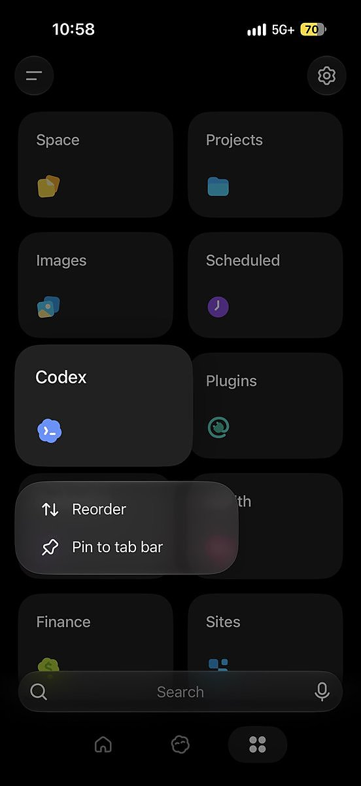
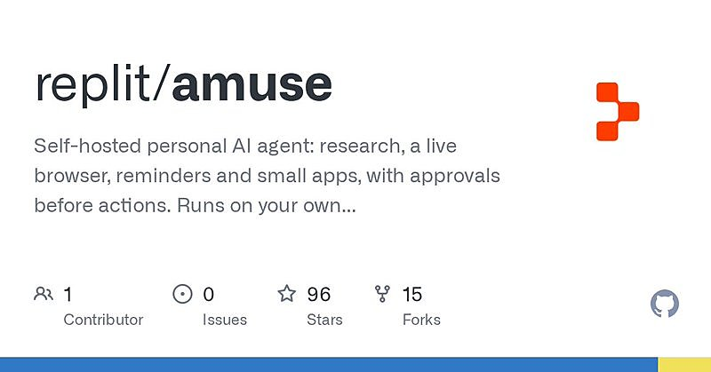

AI 日报 · 11月23日
桌面代理征求反馈，药物研发强调临床前预测
Builder 讨论桌面和手机上的代理入口；Isomorphic Labs 访谈聚焦临床前预测，GitHub 展示用修复补丁替代海量漏洞报告的试点。
跨端代理
药物研发
开源维护
视频工具
5
Builder 动态
3
上榜仓库
1
深度对话
今日要点
深度对话
Isomorphic Labs 谈 AI 药物发现
No Priors 采访 Isomorphic Labs 总裁 Max Jaderberg。他强调现有药物研发的失败常在临床阶段才显现，希望在给患者使用前通过计算更早理解疾病生物学和药物风险。
把更多发现工作移到计算环境
Jaderberg 在访谈开头提出，目标是提高进入临床试验前的预测理解；这是一项研究方向，并非已实现的临床效果。
RSS 精选
周报回顾本周 AI 进展
Builder 动态
跨端入口、开源与评价方式

Peter Yang｜指出移动端线程入口
Peter Yang 分享在新版 ChatGPT 手机应用中长按底部导航、固定 Codex 入口的做法，并指出这个操作不够直观。

Amjad Masad｜开源 Amuse
Replit CEO 宣布由 Replit Missions 构建的 Amuse 已开源；原帖只提供这一发布信息，具体能力应查看项目本身。

Thariq｜人与模型协作仍需技术能力
Thariq 认为模型能力变强时，与模型有效协作的技能也更重要；这是作者对工作方式的判断。
Dan Shipper｜基准分数要看测量口径
Every CEO 提醒，基准测试必须选定测量对象和不变量，分数上升未必直接代表真实团队中的效果。
GitHub Trending
可靠性代理、视频剪辑与设计技能
11 月 23 日 GitHub Trending 快照；星标与 Fork 数取自同日 GitHub API。
今日思考
从演示转向可核验的成果
无论是跨端代理、药物发现还是漏洞修复，衡量进展都需要看任务结果如何被核验。入口是否容易找到、预测是否经临床验证、报告是否能帮维护者完成修复，分别对应不同的证据。
今天可做
选一项代理工作流，记录从发起任务到确认结果的证据，再决定是否扩大使用。
参考来源